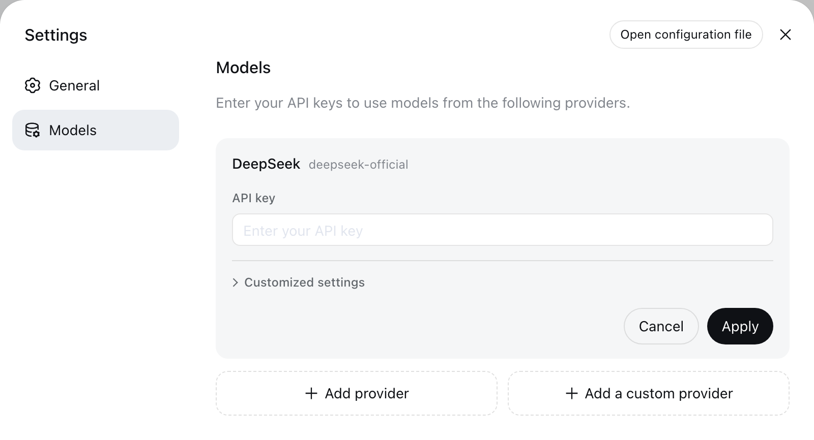

PHOENIX
PHOENIXKira & Living Team
Coordina especialistas, herramientas y flujos de trabajo. Consulta actividad y resultados en sesiones compatibles.
Un espacio de trabajo para crear, investigar y resolver problemas con IA. Kira conecta tus modelos, herramientas, especialistas y archivos en una misma experiencia.
Proyecto en desarrollo activo · Comprueba los requisitos y la firma de cada versión antes de instalar.

Un entorno generalista para trabajar con inteligencia artificial, con capacidades que evolucionan junto a tus proyectos.
Coordina especialistas, herramientas y flujos de trabajo. Consulta actividad y resultados en sesiones compatibles.
Elige motores locales, Ollama o proveedores compatibles. API y autenticación de cuentas permanecen separadas.
Combina conversación con editores, formularios, MiniBrowser y superficies contextuales.
Trabaja con archivos, informes, hojas de cálculo y visualizaciones; verifica la compatibilidad por formato.
Explora fuentes, analiza datos, modifica repositorios, ejecuta pruebas y prepara entregables.
Healthia, investigación deportiva y otras iniciativas en desarrollo, con límites y revisión explícitos.

Kira es la experiencia de coordinación de PHOENIX. Los agentes pueden colaborar según el objetivo, los permisos y el modelo disponible.
No tienes que depender de un solo proveedor. Usa modelos locales si tu equipo lo permite o conecta servicios compatibles con tus propias credenciales.
Modelos y proveedores ↗
Define una tarea con lenguaje natural.
Kira selecciona capacidades disponibles.
Trabaja con herramientas y archivos autorizados.
Revisa resultados, errores y evidencia.
Las capacidades dependen de la compilación, el proveedor, el hardware y los permisos. Healthia está en desarrollo y no se presenta como dispositivo médico certificado. Los proveedores externos pueden tener costos; la web y sus recursos públicos no requieren planes de pago.
Siete lecciones para empezar.
02 / PHOENIXCatálogo de habilidades y módulos.
03 / PHOENIXConsulta estadísticas públicas.
04 / PHOENIXProtocolos de evaluación reproducible.
05 / PHOENIXNovedades verificables.
06 / PHOENIXComparte pruebas, ideas y contribuciones.
Proyecto de código abierto creado y liderado por el Dr. Arisnachy Gómez Díaz. Únete a una comunidad que busca inteligencia útil, verificable y accesible.